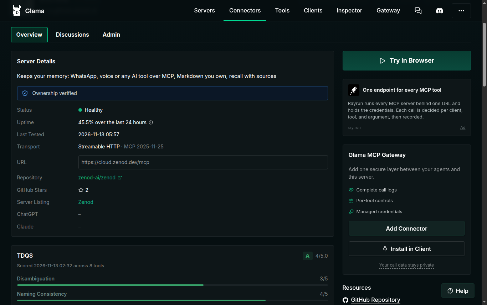
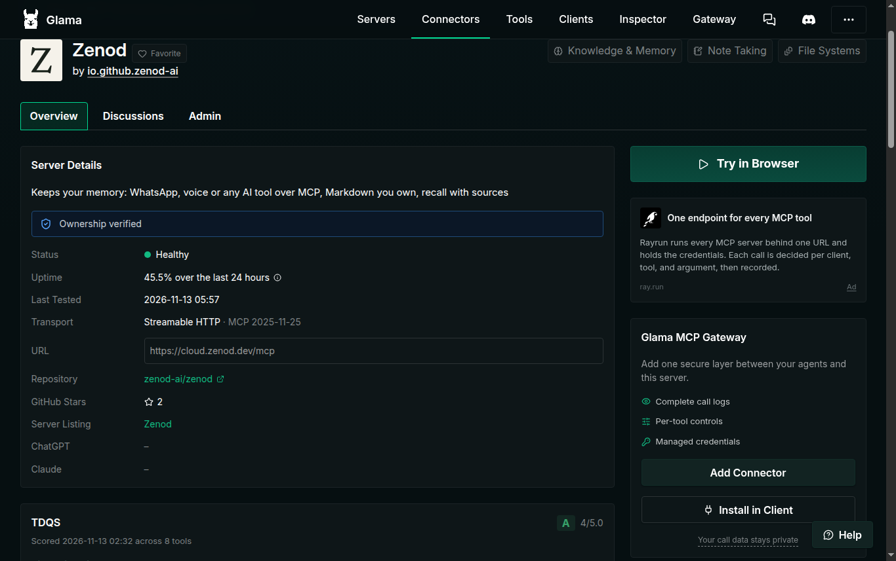

E10-S3 · 2026-11-13
Zenod's new Glama listing scores A, 4 out of 5
Glama graded the new Zenod listing A, 4 out of 5, the same as the old page, so nothing needed fixing.
- Glama backanswers again at 06:00
- ScoredA, 4 out of 5, 8 tools
- Same as old pageno fix needed
- Nextawesome list PR can go on
What we checked (13 Nov 2026, 06:02 UTC)
| Check | Result | |
|---|---|---|
| ✓ | Glama answers again | The listing page loads, 200, after the night's outage |
| ✓ | Quality score shows | A, 4 out of 5, scored 02:32 UTC across all 8 tools |
| ✓ | As good as the old listing | The old page also scored A, 4 out of 5, on the same 8 tools |
| ✓ | Every tool graded | All 8 tools get an A on their own |
| ✓ | Listing healthy | Ownership verified, Healthy, last tested 05:57 UTC |
| ✗ | No fix made | The score met the goal, so nothing was changed and no rescan was asked for |
Open it yourself: glama.ai/mcp/connectors/io.github.zenod-ai/zenod, the TDQS box under Server Details.

Where the missing point goes
| Part | Score | Glama's reason, short |
|---|---|---|
| Tool count | 5 of 5 | Eight tools is the sweet spot |
| Naming | 4 of 5 | ask_brain and memory_cloud break the verb then memory pattern |
| Telling tools apart | 3 of 5 | Four ways to read the vault, and two tools that both poll a job |
| Completeness | 3 of 5 | No tool to delete or correct a memory |
Getting to 5 would mean renaming or merging tools, or adding delete and edit tools. That changes what Zenod offers to every connected AI app, so it is a product choice, not a listing fix, and it is parked.

E10-S3 keeps this page · one shared page shell (E75-S5)